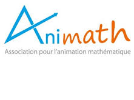
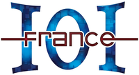

<div id="pageWhoAreWe" class="pageContent">
  <div class="defaultText">
    <h1>Qui sommes nous ?</h1>
    <div class="section">
      <h2>Les associations</h2>
      <p>Le concours Alkindi est organisé conjointement par deux associations :</p>
      <div class="row">
        <div class="col one-half">
          <h3 class="txtright">Animath</h3>
          
          <p>Animath est une association dont le but est de favoriser le goût et la pratique des mathématiques chez les jeunes de collège et lycée, via des activités périscolaires.</p>
          <p class="txtcenter"><a href="http://www.animath.fr" target="_blank">www.animath.fr</a></p>
        </div>
        <div class="col one-half">
          <h3>France-ioi</h3>
          
          <p>France-ioi est une association dont l’objectif est de faire découvrir la programmation et l’algorithmique au plus grand nombre de personnes possible.</p>
          <p class="txtcenter"><a href="http://www.france-ioi.org/" target="_blank">www.france-ioi.org</a></p>
        </div>
      </div>

	<div class="section">
      <h2>Les personnes</h2>
      <p>Les responsables de l'organisation du concours sont Mathias Hiron, Matthieu Lequesne et Yann Rotella. Nassima Djebbar, chargée de projets chez Animath, travaille également sur le concours. Contactez-nous à l'adresse <a href="mailto:info@concours-alkindi.fr">info@concours-alkindi.fr</a>.</p>
    	</div>
	    
      <p class="mtl">La création du concours Alkindi a été inspirée du <a href="http://www.cipher.maths.soton.ac.uk/" target="_blank">National cipher challenge</a> organisé au Royaume Uni par l'université de Southampton.</p>
    </div>
	  
    <h1>Partenaires et soutiens</h1>

    <div class="section">
      <h2>Nos partenaires</h2>
      <div class="clear">
        
        <h3>Le Ministère de l’Éducation Nationale, de la Jeunesse et des Sports</h3>
        <p>Le Ministère de l’Éducation Nationale, de la Jeunesse et des Sports soutient le concours Alkindi, celui-ci s’inscrivant dans le cadre du plan <a href="https://www.education.gouv.fr/le-numerique-au-service-de-l-ecole-de-la-confiance-3212" rel="nofollow">Le numérique au service de l'école de la confiance</a> du Ministère.</p>
      </div>
      <div class="clear mtl">
        
        <h3>La direction générale de la sécurité extérieure</h3>
        <p>La direction générale de la sécurité extérieure est partenaire du concours Alkindi.</p>
        <br/><br/>
      </div>
    </div>

    <div class="section">
      <h2>Les sponsors</h2>
        <div><a href="https://www.inria.fr/" target="_blank"></a> <a href="https://www.inria.fr/" target="_blank">Inria</a> est un institut public de recherche en mathématiques et informatique.</div> 
       <!--  <br/>
       <div><a href="https://www.thalesgroup.com/fr" target="_blank"></a> <a href="https://www.thalesgroup.com/fr" target="_blank">Thales</a>, leader mondial de la sécurité numérique.</div>
        -->
    </div>

    <div class="section">
      <h2>La communauté crypto</h2>
      <p>Plusieurs centres universitaires et de recherche ouvrent leur portes pour <a href="#/pageVisits">accueillir les lauréat·e·s de chaque académie</a>.</p>
	 </div>
    <!--
	<div class="section">
	  <h2>Les prix pour les lauréats académiques</h2>
	  <p>Merci à Universcience et au Palais de la Découverte de nous avoir fourni une réduction pour les <a href="http://www.palais-decouverte.fr" target="_blank">300 exemplaires de la revue Découverte du n° 408 (jan-fév  2017) « Les révolutions cryptologiques de 1937 à nos jours »</a> pour les lauréats académiques.</p>
		<a href="http://www.palais-decouverte.fr" target="_blank"></a>
   </div>-->
    <div class="section">
      <h2>Presse</h2>
      <p>
	<ul>
	  <li> <a href="communiques/CP-Finale_Alkindi2025.docx.pdf">Communiqué de presse : finale 2025</a> (avril 2025)</li>
	</ul>
      <p >Pour plus d'informations, prenez contact avec nous à l'adresse ci-dessous.</p>
    </div>
    <div class="section">
      <h2>Nous contacter</h2>
      <p class="txtcenter txtbold">Pour toute question, n'hésitez pas à nous contacter à l'adresse suivante :</p>
      <p class="txtcenter txtbold"> <a href="mailto:info@concours-alkindi.fr">info@concours-alkindi.fr</a> </p>
    </div>


   </div>

</div>
